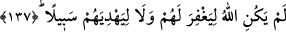

ayne’l-yakîn âlemine veyâ daha yakına ulaştığında Allah “kuluna vahyedeceği şeyi
vahyetti” (Necm, 53/10) Böylece “Peygamber, Rabbi tarafından kendisine indirilene
(onun sıfatlarına) îman etti...” (Bakara, 2/285) Sıfatları Allah’ın sıfatlarına, zatı O’nun
Zatına îman etti. Bütün varlığı zâtı ve sıfatlarıyla ayne’l-yakîn bir îmanla Allah’a îman
etti. O da mü’minlere haber verdi de onlar da îman ettiler. Yâni onlar da varlıklarının
hüviyetine (künhüne, yaratıcısına) îman ettiler. Bu kısım, “et-Te’vîlâtü’n-necmiyye”den
alınmıştır.
İşte gerçek îman budur. Allah bizi ve sizi bununla rızıklandırsın.
Mesnevî’de şöyle denilmiştir:
Bayezid zamanında bir kâfir vardı
Ona kutlu bir müslüman şöyle dedi:
Ne olur müslüman olsan da
Kurtuluşa erişsen, ululuklar bulsan
Kâfir dedi ki: Eğer müslümanlık
Şeyh Bayezid’in müslümanlığıysa
Ben ona güç yetiremem
O benim çabalarımdan çok üstündür
Dine, îmana inanmıyorum ama
Onun îmanına tam îmanım var
Ağzım adamakıllı mühürlü, îman edemem ama
Gizliden gizliye onun îman ettiğine inanıyorum
Yok eğer îman sizin îmanınızsa,
Ona ne meylim var, ne iştahım
İmana aşırı meyli olan
Sizi gördü mü soğur, kesilir
Çünkü sizin îmanınızdan insan yalnız bir ad görür, manası yok
Nasıl olur da çöle kurtuluş yeri denir?
Kul, bu tecrîd ve tefrîde ancak zikir ve tevhidle ulaşır. Rasûlullah (s.a.v.) Hz. Ali
(r.a.)’a tavsiyesinde şöyle buyurmuştur: “Ey Ali! Tevhîdi muhâfaza et. Çünkü
sermâyemdir. Güzel amel işlemeye devam et. Çünkü benim işimdir. Namazı kıl. Çünkü
namaz gözümün nûrudur. Hakk’ı zikret. Çünkü o, gönlümün zaferidir. İlim elde et.
Çünkü o benim mîrasımdır.”
Allah’ım! Bizi de bu mîrastan mahrum bırakma!